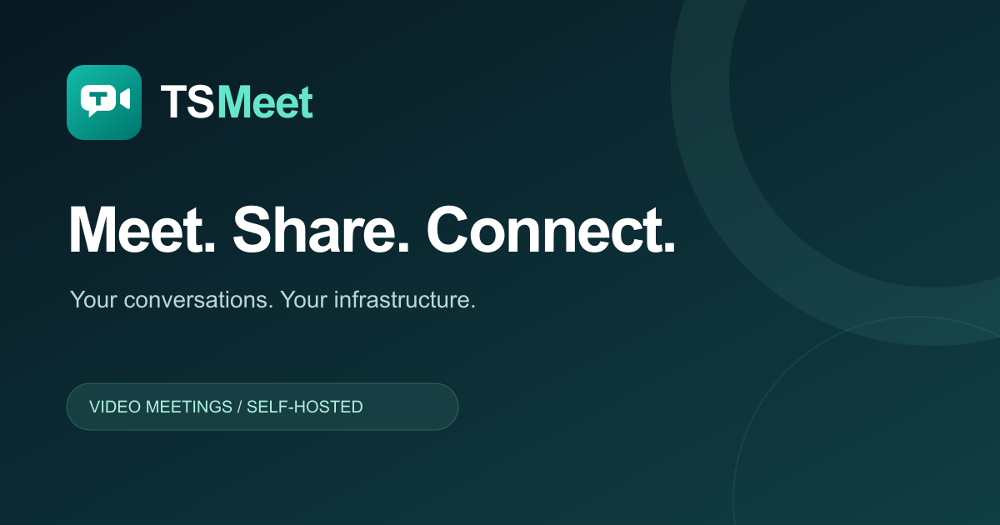

TSMeet / Original identity
Conversation, in one small mark.
A camera, a conversation bubble and a confident T. A focused teal identity built to work from a tiny browser tab to a shared meeting link.
Small-size check · Actual pixels
16 px32 px48 px
Social sharing · 1200 × 630
